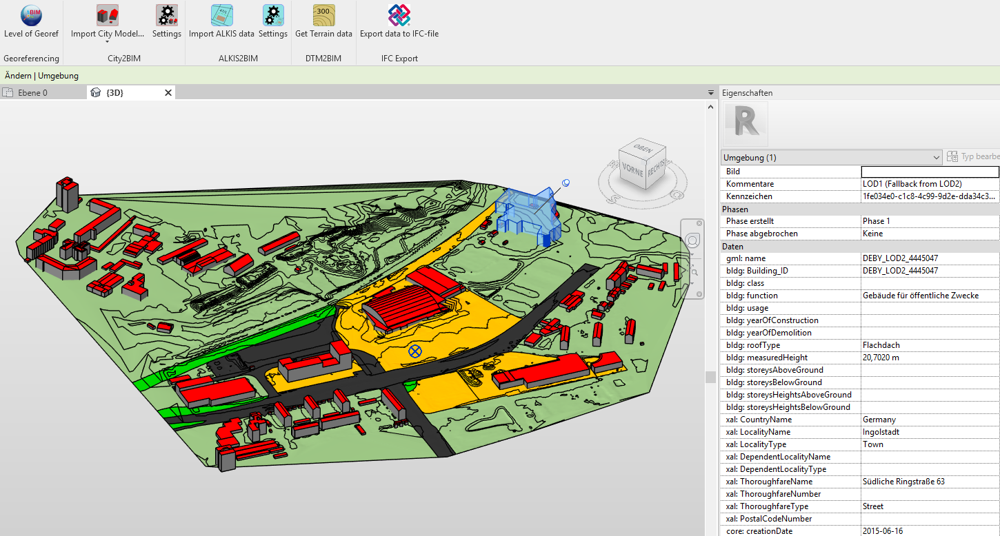
Plugin für Autodesk Revit zur Georeferenzierung und Verknüpfung von Geodaten in Revit.
Unterstützt wird:
Nach dem Download führen Sie die im Ordner befindliche Setup.exe aus. Das Plugin sollte automatisch installiert werden.
Bei nächsten Start von Autodesk Revit 2019 sollte das Plugin vorhanden sein. Falls beim Öffnen gefragt wird, ob das Plugin geladen werden soll, bestätigen Sie dies bitte mit Immer laden.
Sollte das Plugin nicht vorhanden sein, befindet sich Ihre Revit-Installation eventuell nicht im vom Setup angenommenen Ordner [CommonAppDataFolder]\Autodesk\Revit\Addins\2019.
Der CommonAppDataFolder ist meistens C:\ProgramData.
In diesem Fall muss manuell zum Addins-Ordner navigiert werden und dort die Datei City2BIM.addin sowie der Ordner City2RVT abgelegt werden.
Das Plugin wurde mit Microsoft Visual Studio 2019 im .NET Framework in C# entwickelt.
Tests in Revit wurden größtenteils in der Version 2019 durchgeführt.
Für die Programmierung wurden folgende freie API genutzt:
Vielen Dank an die Entwickler an dieser Stelle!
Die Funktionalitäten des Plugins sind erreichbar in der Multifunktionsleiste unterhalb des Registerkarteneintrages “City2BIM”.
Sollte dieser Eintrag nicht vorhanden sein, muss geprüft werden, ob die .addin-Datei* an der richtigen Stelle liegt bzw. ob der Link in der editierbaren .addin-Datei richtig gesetzt ist (siehe Installation).
Die Ribbonleiste des Plugins enthält folgende Icons, dessen Funktionen im Folgenden erläutert werden:

Im Folgenden soll kurz beschrieben werden, wie das Plugin bestmöglich genutzt werden kann.
Vorbereitung:
Programmablauf:
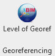
Mithilfe der Funktionen zur Georeferenzierung wird dem Revit-Projekt eine übergeordnete (oder auch lokale) Referenzierung übergeben.
Die einzeln einzustellenden Werte haben Einfluss auf verschiedene Revit-Parameter, die im Folgenden näher erläutert werden.
Weiterführende Informationen zur Georeferenzierung in BIM und im Speziellen in IFC (Level of Georeferencing) erhalten Sie hier (Link zu Github).
Dort ist auch ein Tool zur Überprüfung/Änderung der Georeferenzierung in IFC-Dateien verfügbar.
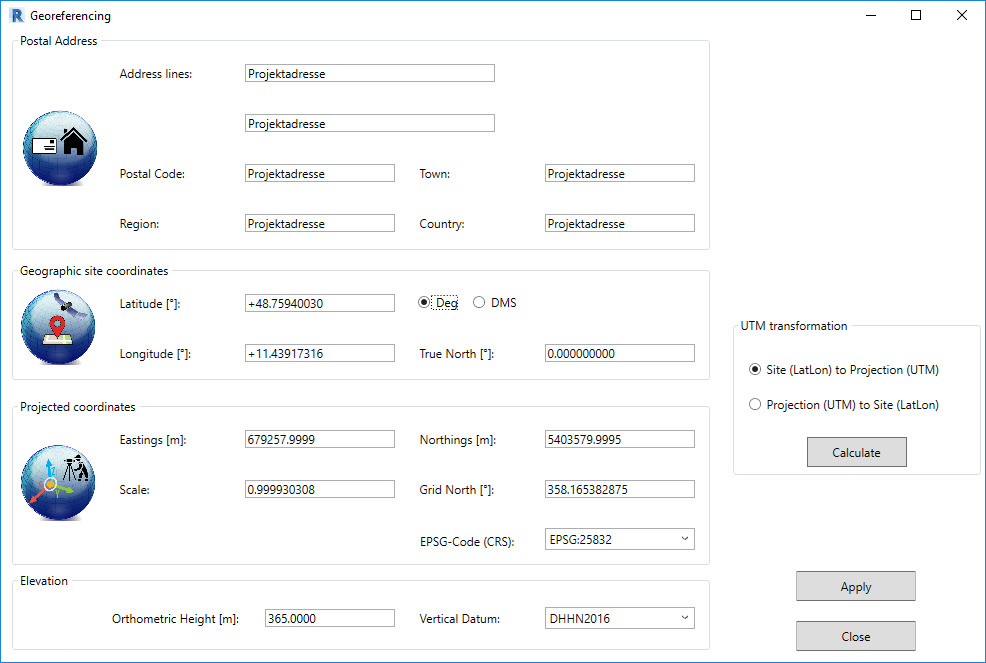
Derzeit ist eine Revit-interne Speicherung leider noch nicht implementiert, da Autodesk zwischen den Versionen der letzten Jahre Adressen unterschiedlich berücksichtigt. Es ist geplant in folgenden Versionen eine Speicherung der Daten Revit-intern in äquivalenten Parametern zu ermöglichen.
Einfache Übergabe einer Punktreferenzierung in WGS84 im Format Breite/Länge zur groben Georeferenzierung.
Die Eingabe der Werte ändert den revit-internen Standort des Projektes, welcher auch folgendermaßen abrufbar ist:
Verwalten -> Projektposition-Standort -> Reiter Standort
Die eigegebenen Werte werden dort übernommen, siehe Bild:

Außerdem wird die Rotation (“True North”) im Projektbasispunkt angepasst für das Revit-XY-Koordinatensystem übernommen.
Falls das Projekt nach IFC exportiert werden soll, wird diese Koordinate in das “IfcSite”-Objekt in die Attribute “RefLatitude” und “RefLongitude” geschrieben.
Die Koordinate ist die Entsprechung des Revit-Projektbasispunktes in WGS84. Sie dient außerdem beim serverbasierten Import von Stadtmodell-Daten als Referenz, von welchem Gebiet Stadtmodell-Daten abgerufen werden sollen.
Möglichkeit zur Übergabe von geodätischen (oder auch lokalen) Koordinaten für den Import von Geodaten bzw. die Speicherung einer Georeferenzierung in einem geodätischen Koordinatenreferenzsystem.
Die Eingabe/Berechnung der Werte hat folgenden Einfluss innerhalb des Revit-Projektes:
Projektbasispunkt-Koordinaten, Übernahme von:
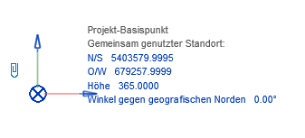
Möglichkeit zur Eingabe einer Projekthöhe sowie eines Höhenbezugssystems.
Die Eingabe/Berechnung der Werte hat folgenden Einfluss innerhalb des Revit-Projektes:
Speicherung als Projektparameter, Verwalten —> Einstellungen-Projektinformationen:
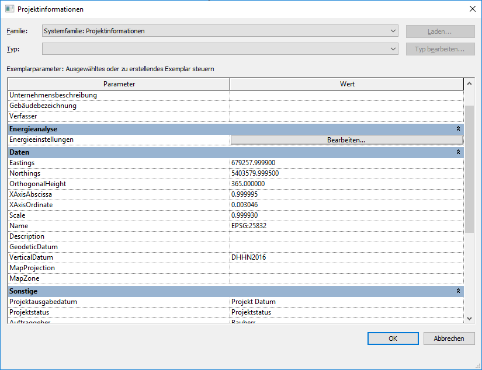
Die Parameter werden durch das Plugin angelegt und orientieren sich daran, wie eine Georeferenzierung nach IFC übergeben werden soll. Wird später die derzeit implementierte IFC-Export Option benutzt, kann die Georeferenzierung standardkonform als IFC-PropertySet mit dem revit-eigenen IFC Exporter übergeben werden.
Die Daten sollten an dieser Stelle nicht manuell geändert werden. Die gespeicherten Werte für die Rotation in XAxisAbscissa und XAxisOrdinate beziehen sich hierbei in Vektorschreibweise umgerechneten Winkel aus Grid North. (Zu beachten ist der Unterschied zwischen True North und Grid North bspw. für Sonnenstandsanalysen).

Zusätzlich zu den Eingabemöglichkeiten bietet das Plugin die Möglichkeit aus WGS84 Landeskoordinaten zu berechnen. Dies ist z.B. hilfreich, falls (noch) keine Koordinaten im Landessystem bekannt sind. Die Berechnung ist ach in umgekehrter Reihenfolge (siehe Bild) möglich.
Folgende Parameter werden berechnet:
Voraussetzung:
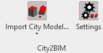
Die City2BIM-Funktion bietet die Möglichkeit, Gebäude aus CityGml-Dateien zu importieren. In Deutschland (u.a. Ländern) werden 3D-Modelle amtlich im CityGml-Format (OGC-Standard) vorgehalten. Das Plugin bietet die Möglichkeit, Gebäude aus diesen Dateien nach Revit zu importieren.
Es werden die äußeren Begrenzungsflächen eines Gebäudes in LOD1- oder LOD2-Ausprägung (je nach Verfügbarkeit) entweder als geschlossene “wasserdichte” Volumenkörper (…as Solids) oder als Flächenmodelle (…as Surfaces) importiert.
LOD2-Daten zeichnen sich durch die Berücksichtigung der Dachform aus und sind somit z.B. für Solarpotentialanalysen wichtig.
LOD1-Daten enthalten lediglich einen in die Höhe (meist Gebäudehöhe am First) extrudierten Grundriss des Gebäudes.
Bevor Daten importiert werden können, wird empfohlen, die Settings anzupassen:
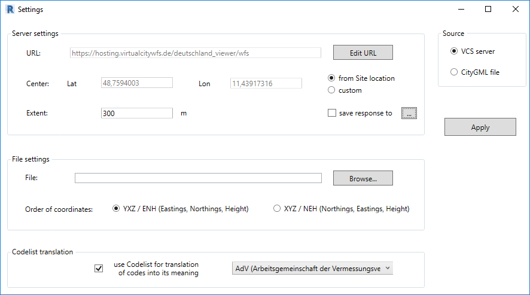
In den Settings werden die Parameter zum Import vorgehalten:
Über diese Möglichkeit können direkt CityGML-Daten per Server-Anfrage vom Projektpartner virtualcitysystems abgerufen werden.
Technisch wird dies über eine WFS (Web Feature Service)-Anfrage realisiert.
Informationen zu diesem WFS erhalten Sie hier (GetCapabilities XML-Dokument).
Die WFS-Abfrage benötigt folgende Parameter:
Auf Wunsch kann die vom Server intern zurückgegebene CityGML-Datei auch lokal im CityGML-Format gespeichert werden. Dazu muss lediglich der Haken bei save response to gesetzt und im …-Button ein Speicherziel ausgewählt werden.
Ein Beispiel für eine Server-Antwort (Center: 51.659987, 6.964985 / Extent: 300 m):

Die vorgehaltenen Daten auf dem VCS-Server werden abhängig von der jeweiligen Gesetzgebung des jeweiligen Bundeslandes bereitgestellt.
Die Daten unterscheiden sich folgendermaßen (Stand: 01/2020):
Der Typ der Daten kann anhand der als Revit-Parameter gespeicherten bldg: Building_ID identifiziert werden:
Einen Überblick über 3D-Stadtmodelldaten, welche vom Server bereitgestellt werden, ist möglich durch Nutzung des Deutschland-Viewers (Link) von virtualcitysystems. Durch Navigation in der Kartenanwendung in der 3D-Ansicht können Gebäude selektiert und deren Informationen angezeigt werden.
Beispiel aus dem Deutschland-Viewer:
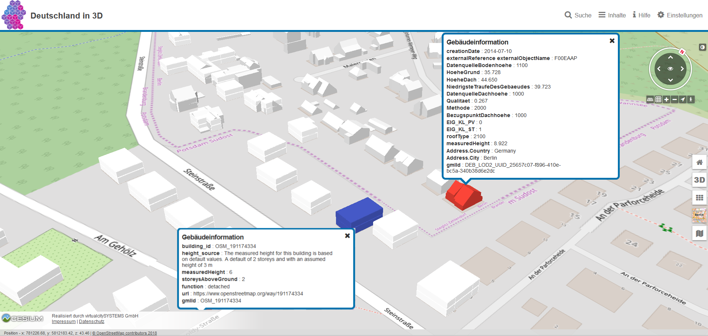
Sollten genauere Daten in LOD2 benötigt werden, muss in den meisten Fällen das jeweilige zuständige Landesamt kontaktiert werden. Diese stellen Stadtmodell-Daten dateibasiert gegen Entgelt zur Verfügung.
Liegen dem Nutzer CityGml-Daten lokal vor, z.B. aus Bestellung bei einem zuständigen Landesamt, können diese Daten auch direkt von der Festplatte importiert werden.
Dazu muss der Pfad zur Datei im File-Textfeld angegeben werden.
Zumeist liegen die (amtlichen) Daten in der Koordinatenreihenfolge YXZ vor. Sollte dies einmal nicht der Fall sein, kann die Reihenfolge auch auf XYZ geändert werden.
Achtung:
Der Datei-Import verzichtet auf eine Filterung der Daten bezüglich Projetmittelpunkt oder Ausdehnung.
Es ist daher empfehlenswert, keine zu großen CityGML-Daten (bspw. ganze Städte) zu importieren. Der Import würde in diesem Fall sehr lange dauern oder eventuell gar scheitern.
Amtliche Geodaten für 3D-Stadtmodelle in Deutschland enthalten als Attributwerte oft Zahlen, welche eine Codierung von lesbaren Eigenschaften darstellen. Beispielattribute hierfür sind die Gebäudefunktion oder die Dachform.
Das Plugin bietet die Möglichkeit diese Codierungen zu übersetzen. Dafür sollte der entsprechende Haken gesetzt und die jeweilige Codeliste (AdV oder SIG3D) ausgewählt werden. Die amtlichen deutschen Daten orientieren sich zumeist an der Codierung der AdV.
Wurden alle nötigen Einstellungen gesetzt, kann der Import der Daten erfolgen.
Dazu ist eine Auswahl des Geometrietyps erforderlich:
| LOD2-Gebäude | als Flächenmodelle (Surfaces) | als Voluemenkörper (Solid) |
|---|---|---|
| 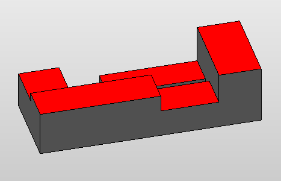 |  |
 |
Unabhängig von der Auswahl werden folgende Operationen immer durchgeführt:
Hiebei werden alle Flächen aus den CityGML-Daten mit deren Geometrie direkt importiert.
Die Flächenmodelle haben folgende exklusive Eigenschaften:
Vorteile:
Nachteile:
Hiebei werden alle Flächen aus den CityGML-Daten mit deren Geometrie direkt importiert.
Die Volumenkörper haben folgende exklusive Eigenschaften:
Vorteile:
Nachteile:
Berechnung der Volumenkörper:
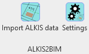
Die ALKIS2BIM-Funktion bietet die Möglichkeit, amtliche Daten nach dem deutschen ALKIS-Schema zu importieren.
Berücksichtigt werden:
Es handelt sich jeweils um 2D-Flächen, welche in einer separaten Ebene unterhalb der Projekthöhe positioniert werden. Wurde vorher mittels DTM2BIM ein Gelände erstellt, ist es außerdem möglich einen oder mehrere ALKIS-Themen auf dem Gelände auotmatisiert drapieren zu lassen.
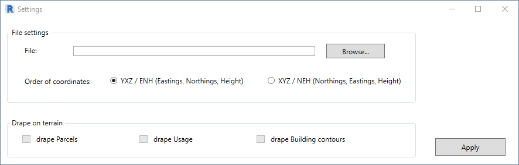
Vor dem Import muss im Settings-Fenster der Pfad zu den ALKIS-Daten gesetzt werden. Vom Programm berücksichtigt werden ausschließlich Daten im XML-Format aus der NAS-Schnittstelle (NAS-XML).
Sollten Daten nicht in der Koordinatenreihenfolge YXZ vorliegen, kann dies hier auf XYZ geändert werden.
Beispiel:
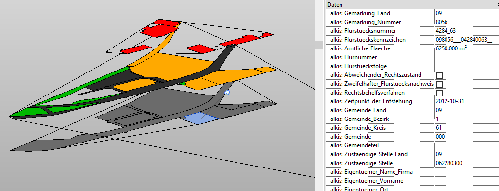
Diese Funktion bietet dem Nutzer die Möglichkeit, ein oder mehrere ALKIS-Themen direkt auf das Gelände zu legen. Dies ist vor allem für visuelle Präsentationszwecke geeignet. (Bildbespiel, siehe Bild in Überblick)
Achtung:
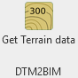
Das Plugin ermöglicht den Import von Digitalen Geländemodellen, welche als Raster vorliegen.
Solche Raster-DGM sind zumeist bei den jeweiligen Landesämtern in unterschiedlichen Gitterweiten verfügbar.
Beispiel (mit Stadtmodell-Gebäuden):

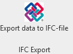
Derzeit wurde (noch) kein eigener IFC-Exporter implementiert. Bitte nutzen Sie zum Export den revit-eigenen Exporter.
Es wird lediglich im lokalen Verzeichnis C:\Users\[username]\AppData\Local\City2BIM eine Datei angelegt, mit welcher die Georeferenzierung standardkonfrom als PropertySet übergeben werden kann.
Aufbau Datei:
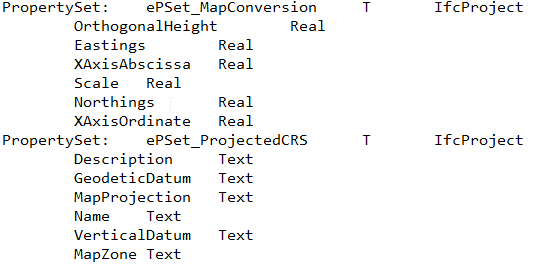
Die Attribute zur Georeferenzierung aus den Projektinformationen werden beim IFC-Export dadurch in die PropertySets ePset_MapConversion bzw. ePset_ProjectedCRS geschrieben.
Um dies zu gewährleisten muss beim Export diese Textdatei eingebunden werden, siehe Bild (Revit Ifc Exporter-Einstellungen):

PlugIn for Autodesk Revit for integration of 3D-CityModels from CityGml, 2D-Surfaces from ALKIS (german standard for parcels, usage, building contours) and terrain grid data in a common global or local coordinate systems (e.g. ETRS89_UTM32).
After the download please start the setup.exe. The plugin should be installed automatically.
By the next start of Autodesk Revit 2019 there should be the plugin available in the ribbon bar. If you will be asked whether plugin should be imported please click Always load.
If there is no plugin available your Revit installation is maybe not in the assumed folder:
[CommonAppDataFolder]\Autodesk\Revit\Addins\2019.
CommonAppDataFolder is in the most cases C:\ProgramData.
If so please navigate manually to the Addins folder of your installation and copy the addin-file City2BIM.addin and the folder City2RVT into the subfolder of version 2019.
Functionality of the plugin is available under the ribbon tab City2BIM.
If this tab is not available please check for the location of the needed .addin file and also the path to the relevant dll in the addin-file (see Installation(eng)).
The ribbon tab includes the following icons:
Preparation:
Program workflow
The concept together with the tool was developed within the scope of the following sponsorship project:
3D-Punktwolke - CityBIM
| in association with | supported by |
|---|---|
 |
 |

HTW Dresden
Fakultät Geoinformation
Friedrich-List-Platz 1
01069 Dresden
Project head:
Project staff:
This project is licensed under the MIT License:
Copyright (c) 2020 HTW Dresden
Permission is hereby granted, free of charge, to any person obtaining a copy
of this software and associated documentation files (the "Software"), to deal
in the Software without restriction, including without limitation the rights
to use, copy, modify, merge, publish, distribute, sublicense, and/or sell
copies of the Software, and to permit persons to whom the Software is
furnished to do so, subject to the following conditions:
The above copyright notice and this permission notice shall be included in all
copies or substantial portions of the Software.
THE SOFTWARE IS PROVIDED "AS IS", WITHOUT WARRANTY OF ANY KIND, EXPRESS OR
IMPLIED, INCLUDING BUT NOT LIMITED TO THE WARRANTIES OF MERCHANTABILITY,
FITNESS FOR A PARTICULAR PURPOSE AND NONINFRINGEMENT. IN NO EVENT SHALL THE
AUTHORS OR COPYRIGHT HOLDERS BE LIABLE FOR ANY CLAIM, DAMAGES OR OTHER
LIABILITY, WHETHER IN AN ACTION OF CONTRACT, TORT OR OTHERWISE, ARISING FROM,
OUT OF OR IN CONNECTION WITH THE SOFTWARE OR THE USE OR OTHER DEALINGS IN THE
SOFTWARE.